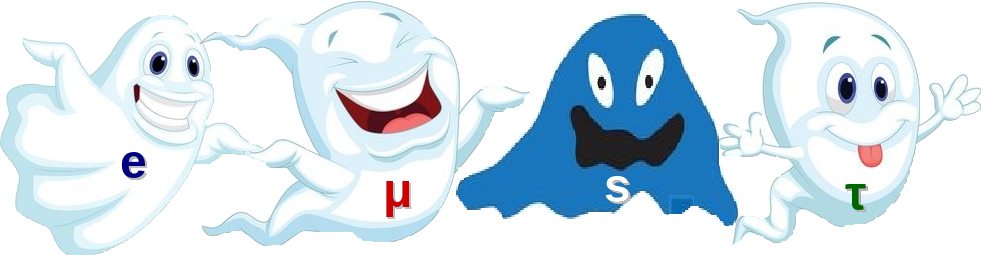

Neutrinos are fundamental particles according to the Standard Model of particle physics "just" like the electrons. However, neutrinos are a bit special because they don't have electric charge nor color charge. Then neutrinos only interact through the electroweak interaction and gravitation (yes we are quite sure that they should have a mass, but really tiny). So detecting neutrinos is very challenging, that’s why neutrinos are considered like phantom particles. If you want to detect neutrinos you need huge detectors or very intense sources of neutrinos, for example nuclear reactors. You might wonder why we care about these particles? Well, there are several reasons for that. First, neutrinos are the most abundant particles (with mass) in the Universe. Second, understanding all neutrino properties will help to understand how the Universe evolved after the big bang and why there is more matter than antimatter. Third, neutrinos could be of another type of particle different from all other particles of the Standard Model that are known as Majorana Particles. If it’s the case neutrinos could be their own antiparticles. Four, we know that according to the Standard Model there are three types of neutrinos (usually known as active neutrinos) and that should be massless, however from experiments we know that neutrinos do have a mass and that they oscillate or change of flavor (or type) when travelling from one point to another. In addition sterile neutrinos could exist, which could be another type of neutrinos but interacting even less than the active neutrinos (like the ghost of the ghost).This is just a short overview of the many open question on this field and why neutrinos are so interesting.. the ghost particles.